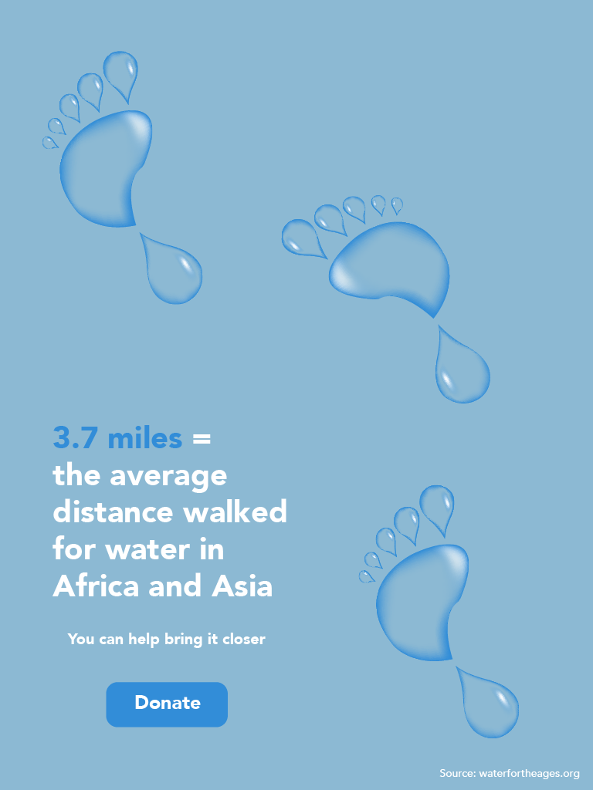

Ella Mathewson

This poster is one of three about the lack of access to clean water. The point of this project was to create polarized explorations of an enviornmental or social issue and call people to donate or learn more about said issue.
This poster features footprints that were made to look like water droplets. The 'button' calls on the viewer to help donate, and the call to action says how their donation will help.